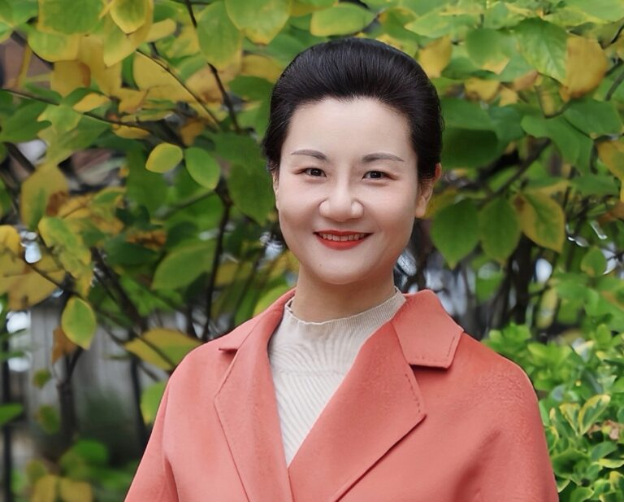
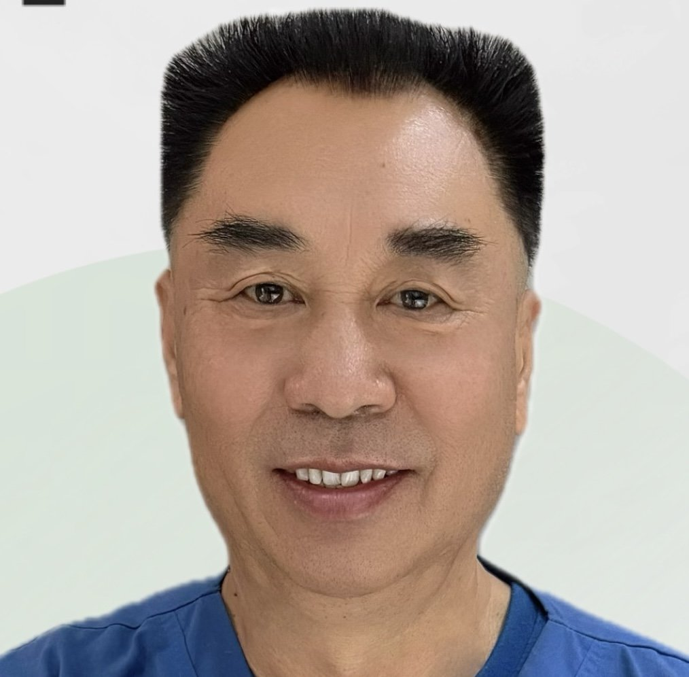
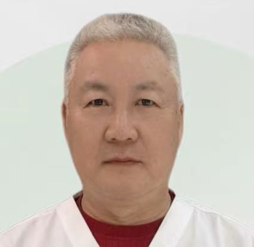

范廷霞 Kelly
- 擅长领域：经络疏通、肌肉放松
- 善于治疗：运动损伤康复、缓解颈肩腰腿疼痛、全方位亚健康调理
转发任意国医堂内容到朋友圈，集满相应赞数即可领取对应项目

我们的宗旨
诊所位于纽约法拉盛华美大楼一楼，地理位置优越，闹中取静，交通便利，为民众就医提供极大便利。纽约中医国医堂设有中医内科、中医妇科、中医男科、针灸科、推拿理疗科及中药房，并接受各种医保，致力于为患者提供专业、全面的中医健康管理服务。
纽约中医诊所 · 法拉盛30年专业中医团队
专注针灸、中药调理、男科妇科与全身系统平衡
国医堂位于纽约法拉盛核心商圈，是纽约本地知名中医诊所。30年临床经验团队，结合传统中医理论与现代诊疗理念，为纽约地区患者提供系统化中医健康管理服务。



✔ 法拉盛核心位置
✔ 纽约州执照针灸师
✔ 接受多种医保
✔ 30年临床经验
✔ 服务纽约华人社区
卓越团队
我们的中医团队拥有深厚的中医理论基础和丰富的临床经验，为每一位患者提供专业的诊断与个性化治疗服务

专业服务
我们的治疗师精通中医穴位疗法与舒筋活络技术，改善血液循环，恢复身体活力与健康平衡




专门治疗
作为纽约中医专业男科门诊，我们针对：
通过针灸与中药综合调理，改善整体体质。
纽约中医治疗失眠｜法拉盛针灸调理睡眠障碍
关节炎、腰痛、颈椎病、骨质疏松、腰椎病、关节积液
流感、咳嗽、新冠后遗症、过敏性鼻炎、咽炎、扁桃体炎、慢性支气管炎
消化不良、胃痛、腹泻、痢疾、便秘、肠炎、慢性胃炎
血尿、蛋白尿、尿痛、尿路感染、肾炎、膀胱炎
面瘫、三叉神经痛、偏头痛、神经衰弱、记忆衰退、神经炎
心律失常、心绞痛、心肌炎、高血压、心悸、冠心病
焦虑症、抑郁症、睡眠障碍、神经衰弱、惊恐障碍
小儿营养不良、发育迟缓、免疫缺陷、食欲障碍、生长迟缓、体质虚弱
贫血、白细胞减少症、术后虚弱、术后恢复不良
痤疮、湿疹、荨麻疹、皮炎、毛囊炎、脂溢性皮炎
肝炎、胆囊炎、脂肪肝、胆石症、肝硬化、胆管炎
免疫低下、慢性炎症、类风湿、风湿热、淋巴结炎
我们提供全面的中医诊疗服务，包括针灸、草药治疗、拔罐、刮痧、艾灸和中医推拿。每一项疗程都根据患者的个人需求量身定制，旨在达到最佳的治疗效果与康复成果。
全面关心


疗愈之声
来自我们健康社区的真实疗愈故事——他们通过国医堂的中医针灸与整体调理，收获了深层的康复体验与身心的蜕变
「之前我因为颈椎问题患有颈椎综合症、椎间盘突出和椎管狭窄，肩膀僵硬，手臂酸胀、疼痛、麻木。之前在很多地方做过按摩和针灸，效果都不理想。后来在网上找到法拉盛国医堂，第一次由简医生和按摩师治疗后就感觉非常明显，颈肩放松了许多，艾灸效果也特别好，整个过程非常专业。
非常感谢国医堂的医生和治疗师，让我重获轻松与健康。希望接下来的治疗继续帮助我彻底摆脱颈椎病带来的困扰。特别感谢简医生和推拿师的精湛医术与悉心照顾！」
「长期肩痛一直吃药控制，反反复复影响生活，无法提起重物。感谢国医堂简医生，经过几次的针灸推拿还有艾灸治疗，多年的老毛病得到极大缓解，肩背酸痛越来越少，推荐有类似问题的朋友前来体验」
「乐医生技术精湛，医德高尚。我和家人已经认识他十几年了，与其说他是帮助我们的好医生，其实更像是老朋友。祝愿乐医生的专业团队越来越壮大。」
四时同调 · 以中医之道护日常之身
国医堂为您呈现最实用、最贴近生活的中医养生内容——由专业中医师撰写，让您在忙碌生活中也能随时调养身心。